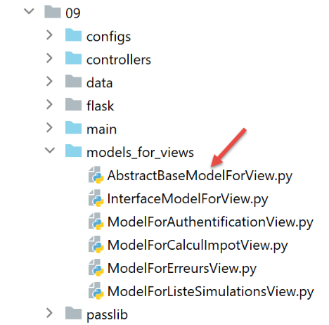
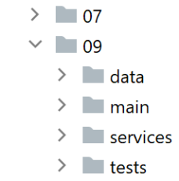
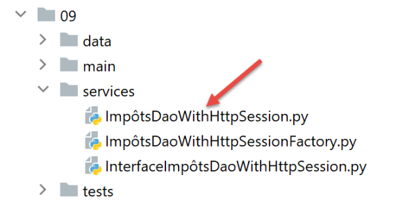
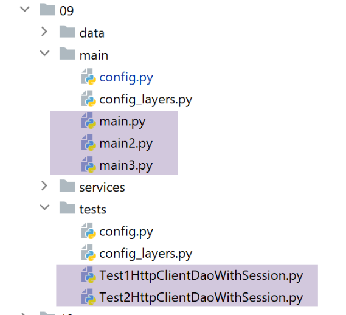

34. Exercício prático: Versão 14
A pasta [http-servers/09] para a versão 14 é obtida copiando a pasta [http-servers/08] da versão 13.
34.1. Introdução
CSRF (Cross-Site Request Forgery) é uma técnica de sequestro de sessão. É explicada da seguinte forma na Wikipédia (https://fr.wikipedia.org/wiki/Cross-site_request_forgery):
- Malorie consegue descobrir o link que lhe permite eliminar a mensagem em questão.
- Malorie envia uma mensagem a Alice contendo uma pseudo-imagem para exibir (que na verdade é um script). O URL da imagem é o link para o script que apaga a mensagem desejada.
- Alice deve ter uma sessão aberta no seu navegador para o site que Malorie tem como alvo. Este é um pré-requisito para que o ataque seja bem-sucedido silenciosamente, sem acionar um pedido de autenticação que alertaria Alice. Esta sessão deve ter as permissões necessárias para executar o pedido destrutivo de Malorie. Não é necessário que uma aba do navegador esteja aberta no site alvo, nem mesmo que o navegador esteja em execução. Basta que a sessão esteja ativa.
- Alice lê a mensagem de Malorie; o seu navegador utiliza a sessão aberta de Alice e não solicita autenticação interativa. Tenta recuperar o conteúdo da imagem. Ao fazê-lo, o navegador aciona o link e apaga a mensagem, recuperando uma página web baseada em texto como conteúdo da imagem. Uma vez que não reconhece o tipo de imagem associado, não exibe uma imagem, e a Alice não se apercebe de que a Malorie acabou de a obrigar a apagar uma mensagem contra a sua vontade.
Mesmo explicada desta forma, a técnica CSRF é difícil de compreender. Vamos desenhar um diagrama:

- Em [1-2], a Alice comunica com o fórum (Site A). Este fórum mantém uma sessão para cada utilizador. O navegador da Alice armazena este cookie de sessão localmente e reenvia-o sempre que faz um novo pedido ao Site A;
- Em [3], Malorie envia uma mensagem a Alice. Alice lê-a no seu navegador. A mensagem está em formato HTML e contém um link para uma imagem no Site B. Na verdade, este link é um link para um script JavaScript que é executado assim que chega ao navegador de Alice;
- Este script JavaScript faz então uma solicitação ao Site A. O navegador de Alice envia automaticamente a solicitação juntamente com o cookie de sessão armazenado localmente. É aqui que ocorre o ataque: Malorie acedeu com sucesso ao Site A utilizando as credenciais de sessão de Alice. A partir deste momento, independentemente do que aconteça, o ataque já ocorreu;
Para combater este tipo de ataque, o Site A pode proceder da seguinte forma:
- A cada troca [1-2] com a Alice, o Site A envia uma chave, doravante designada por token CSRF, que a Alice deve devolver na sua próxima solicitação. Assim, a cada solicitação, a Alice deve enviar duas informações:
- o cookie de sessão;
- o token CSRF recebido na resposta à sua última solicitação ao Site A;
É aqui que reside a proteção: embora o navegador reenvie automaticamente o cookie de sessão para o Site A, não o faz com o token CSRF. Por este motivo, a troca 6-7 realizada pelo script de ataque será rejeitada, uma vez que a solicitação 6 não terá enviado o token CSRF;
O Site A pode enviar o token CSRF a Alice de várias formas para uma aplicação HTML:
- Pode enviar uma página HTML com cada pedido, onde todos os links contêm o token CSRF, por exemplo [http://siteA/chemin/csrf_token]. Quando a Alice clicar num desses links durante o próximo pedido, o Site A irá simplesmente recuperar o token CSRF da URL do pedido e verificar se é válido. É isto que será feito aqui;
- para páginas HTML que contenham um formulário, pode enviar o formulário com um campo oculto [input type='hidden'] contendo o token CSRF. Este será então enviado automaticamente com o formulário quando a Alice enviar a página. O Site A irá recuperar o token CSRF do corpo da solicitação;
- outras técnicas são possíveis;
34.2. Configuração

Adicionamos dois valores booleanos à configuração [parameters] da aplicação:
- [with_redissession]: Quando definido como True, a aplicação utiliza uma sessão Redis. Quando definido como False, a aplicação utiliza uma sessão Flask padrão;
- [with_csrftoken]: Quando definido como True, os URLs da aplicação contêm um token CSRF;
# durée pause thread en secondes
"sleep_time": 0,
# serveur Redis
"with_redissession": True,
"redis": {
"host": "127.0.0.1",
"port": 6379
},
# token csrf
"with_csrftoken": False,
34.3. Implementação de CSRF
Iremos garantir que quando:
config['parameters']['with_csrftoken']
estiver definido como [True], a aplicação envie páginas web para o navegador do cliente cujos links contenham um token CSRF.
34.3.1. O módulo [flask_wtf]
O token CSRF será implementado utilizando o módulo [flask_wtf], que instalamos num terminal do PyCharm:
(venv) C:\Data\st-2020\dev\python\cours-2020\python3-flask-2020\packages>pip install flask_wtf
Collecting flask_wtf
…
34.3.2. Modelos de visualização
Estamos a introduzir uma nova classe nos modelos:

A classe [AbstractBaseModelForView] é a seguinte:
- linha 9: a classe [AbstractBaseModelForView] implementa a interface [InterfaceModelForView] implementada pelas classes de modelo;
- linhas 11–13: o método [get_model_for_view] não está implementado;
- Linhas 15–20: O método [get_csrftoken] gera o token CSRF se a aplicação tiver sido configurada para os utilizar. Dependendo da situação, a função devolve um token precedido por uma barra (/) ou uma cadeia de caracteres vazia. A função [generate_csrf] gera sempre o mesmo valor para um determinado pedido do cliente. O processamento de uma solicitação envolve a execução de várias funções. A utilização de [generate_csrf] nessas funções gera sempre o mesmo valor. Na solicitação seguinte, no entanto, é gerado um novo token CSRF;
Todos os modelos M para a vista V incluirão o token CSRF da seguinte forma:
- Cada classe de modelo estende a classe base [AbstractBaseModelForView];
- Linha 8: O token CSRF é solicitado à classe pai. Recebemos uma string vazia ou uma string como [/Ijk4NjQ2ZDdjZjI0ZDJiYTVjZTZjYmFhZGNjMjE3Y2U5M2I3ODI0NzYi.Xy5Okg.n-kSR_nslkndfT7AFVy2UDtdb8c];
34.3.3. As Visualizações
Pelo que acabámos de ver, todas as vistas V terão o token CSRF no seu modelo M. Podem, portanto, utilizá-lo nos links que contêm. Vejamos alguns exemplos:
O fragmento de autenticação [v_authentification.html]
<!-- form HTML - post its values with the [authenticate-user] action -->
<form method="post" action="/authentifier-utilisateur{{modèle.csrf_token}}">
<!-- title -->
<div class="alert alert-primary" role="alert">
<h4>Veuillez vous authentifier</h4>
</div>
…
</form>
- linha 2: com base no que acabámos de ver, o URL para o atributo [action] será:
[/authentifier-utilisateur/Ijk4NjQ2ZDdjZjI0ZDJiYTVjZTZjYmFhZGNjMjE3Y2U5M2I3ODI0NzYi.Xy5Okg.n-kSR_nslkndfT7AFVy2UDtdb8c]
ou
dependendo se a aplicação foi configurada para utilizar tokens CSRF;
O fragmento de cálculo de impostos [v-calcul-impot.html]
<!-- form HTML posted -->
<form method="post" action="/calculer-impot{{modèle.csrf_token}}">
<!-- 12-column message on blue background -->
<div class="col-md-12">
<div class="alert alert-primary" role="alert">
<h4>Remplissez le formulaire ci-dessous puis validez-le</h4>
</div>
</div>
…
</form>
A secção de simulações [v-liste-simulations.html]
{% if modèle.simulations is undefined or modèle.simulations|length==0 %}
<!-- message on blue background -->
<div class="alert alert-primary" role="alert">
<h4>Votre liste de simulations est vide</h4>
</div>
{% endif %}
{% if modèle.simulations is defined and modèle.simulations|length!=0 %}
<!-- message on blue background -->
<div class="alert alert-primary" role="alert">
<h4>Liste de vos simulations</h4>
</div>
<!-- simulation table -->
<table class="table table-sm table-hover table-striped">
…
<!-- table body (data displayed) -->
<tbody>
<!-- display each simulation by browsing the simulation table -->
{% for simulation in modèle.simulations %}
<!-- display a table row with 6 columns - <tr> tag -->
<!-- column 1: row header (simulation no.) - <th scope='row' tag -->
<!-- column 2: parameter value [married] - <td> tag -->
<!-- column 3: parameter value [children] - <td> tag -->
<!-- column 4: parameter value [salary] - <td> tag -->
<!-- column 5: [tax] parameter value - <td> tag -->
<!-- column 6: parameter value [surcôte] - <td> tag -->
<!-- column 7: parameter value [discount] - <td> tag -->
<!-- column 8: parameter value [reduction] - <td> tag -->
<!-- column 9: parameter value [rate] (of tax) - <td> tag -->
<!-- column 10: link to delete simulation - <td> tag -->
<tr>
<th scope="row">{{simulation.id}}</th>
<td>{{simulation.marié}}</td>
<td>{{simulation.enfants}}</td>
<td>{{simulation.salaire}}</td>
<td>{{simulation.impôt}}</td>
<td>{{simulation.surcôte}}</td>
<td>{{simulation.décôte}}</td>
<td>{{simulation.réduction}}</td>
<td>{{simulation.taux}}</td>
<td><a href="/supprimer-simulation/{{simulation.id}}{{modèle.csrf_token}}">Supprimer</a></td>
</tr>
{% endfor %}
</tr>
</tbody>
</table>
{% endif %}
O fragmento de código do menu [v-menu.html]
<!-- bootstrap menu -->
<nav class="nav flex-column">
<!-- display a list of links HTML -->
{% for optionMenu in modèle.optionsMenu %}
<a class="nav-link" href="{{optionMenu.url}}{{modèle.csrf_token}}">{{optionMenu.text}}</a>
{% endfor %}
</nav>
34.3.4. Rotas
Existem agora dois tipos de rotas, dependendo de utilizarem ou não um token CSRF:

- [routes_without_csrftoken] são rotas sem um token CSRF. Estas são as rotas da versão anterior;
- [routes_with_csrftoken] são rotas com um token CSRF.
Em [routes_with_csrftoken], as rotas têm agora um parâmetro adicional, o token CSRF:
Todas as rotas têm agora o token CSRF nos seus parâmetros, incluindo a rota [/init-session]. Isto significa que o cliente não pode iniciar a aplicação digitando diretamente a URL [/init-session/html], porque o token CSRF estará em falta. Agora, tem de passar pela URL [/] nas linhas 7–10.
As rotas são selecionadas no script principal [main]:
- linhas 9–13: seleção de rotas dependendo de se a aplicação utiliza tokens CSRF;
34.3.5. O [MainController]
Para cada pedido, o servidor deve verificar a presença do token CSRF. Faremos isso no controlador principal [MainController], que lida com todos os pedidos:
- Linha 20: Recupera o token CSRF da URL de solicitação do formulário [http://machine:port/path/action/param1/param2/…/csrf_token]. O token de sessão é sempre o último elemento da URL;
- linha 23: a validade do token CSRF recuperado da URL é verificada em relação ao token CSRF da sessão. Se for inválido, a função [validate_csrf] lança uma exceção [ValidationError] (linha 27);
- linha 41: o token CSRF é incluído na resposta enviada ao cliente. Os clientes JSON e XML irão precisar dele. Isto porque estes clientes não recebem páginas HTML com o token CSRF nos links contidos nas páginas. Receberão, portanto, o token na resposta JSON ou XML enviada pelo servidor;
Nota: A função [validate_csrf] na linha 23 não verifica se há uma correspondência exata. O token CSRF é armazenado na sessão sob a chave [csrf_token]. Os testes parecem indicar que um token CSRF é válido se tiver sido gerado durante a sessão. Assim, se substituir manualmente o token CSRF [xyz] no URL apresentado no navegador — por exemplo, (/lister-simulations/xyz) — por outro token [abc] recebido anteriormente durante uma ação anterior, a ação [/lister-simulations] será bem-sucedida;
34.4. Testes com um navegador
Primeiro:
- inicie o servidor com o parâmetro [with_csrftoken] definido como [True];
- solicite a URL [http://localhost:5000] utilizando um navegador;

- em [1], o token CSRF;
Vamos realizar algumas operações até termos uma lista de simulações:

Agora, introduza manualmente a URL [http://localhost:5000/supprimer-simulation/1/x] para eliminar a simulação com id=1. Introduzimos intencionalmente um token CSRF incorreto para ver o que acontece. A resposta do servidor é a seguinte:

Nota 1: Não é certo que o método aqui utilizado seja sempre suficiente para contrariar ataques CSRF. Voltemos ao diagrama do ataque:
Se o script JavaScript descarregado em [5] for capaz de ler o histórico do navegador utilizado pela Alice, poderá recuperar as URLs executadas pelo navegador, tais como [/target/csrf_token]. Poderá então recuperar o token de sessão [csrf_token] e levar a cabo o seu ataque em [6-7]. No entanto, o navegador apenas permite o acesso ao histórico da janela do navegador na qual o script está a ser executado. Portanto, se a Alice não utilizar a mesma janela para interagir com o Site A [1-2] e ler a mensagem da Malorie [3], o ataque CSRF não será possível.
34.5. Clientes de consola
Outra forma de testar a versão 14 da aplicação é reutilizar os testes da versão 12 e adaptá-los ao novo servidor.

A pasta [impots/http-clients/09] é inicialmente criada através da cópia da pasta [impots/http-clients/07]. Em seguida, é modificada.
Voltemos às rotas que inicializam uma sessão:
Nenhuma destas rotas é adequada para inicializar uma sessão JSON ou XML:
- linhas 2–5: a rota [/] inicializa uma sessão HTML;
- linhas 8–11: a rota [/init-session] requer um token CSRF que não conhecemos;
Decidimos adicionar uma nova rota ao servidor:
- linha 2: a nova rota. Não espera um token CSRF. Voltámos, assim, à rota [/init-session] da versão anterior;
- linhas 4-5: redirecionamos o cliente (JSON, XML, HTML) para a rota [/init-session], que inclui o token CSRF nos seus parâmetros;
Pode testar esta nova rota num navegador:

A resposta do servidor (configurada com [with_csrftoken=True]) é a seguinte:

- em [1], o servidor foi redirecionado para a rota [/init-session] com o token CSRF na URL;
- em [2], o token CSRF está no dicionário JSON enviado pelo servidor, associado à chave [csrf_token];
Voltemos ao código do cliente:

Modificamos a configuração [config] da seguinte forma:
config.update({
# fichier des contribuables
"taxpayersFilename": f"{script_dir}/../data/input/taxpayersdata.txt",
# fichier des résultats
"resultsFilename": f"{script_dir}/../data/output/résultats.json",
# fichier des erreurs
"errorsFilename": f"{script_dir}/../data/output/errors.txt",
# fichier de logs
"logsFilename": f"{script_dir}/../data/logs/logs.txt",
# le serveur de calcul de l'impôt
"server": {
"urlServer": "http://127.0.0.1:5000",
"user": {
"login": "admin",
"password": "admin"
},
"url_services": {
"calculate-tax": "/calculer-impot",
"get-admindata": "/get-admindata",
"calculate-tax-in-bulk-mode": "/calculer-impots",
"init-session": "/init-session-without-csrftoken",
"end-session": "/fin-session",
"authenticate-user": "/authentifier-utilisateur",
"get-simulations": "/lister-simulations",
"delete-simulation": "/supprimer-simulation",
}
},
# mode debug
"debug": True,
# csrf_token
"with_csrftoken": True,
}
)
…
# route init-session
url_services = config['server']['url_services']
if config['with_csrftoken']:
url_services['init-session'] = '/init-session-without-csrftoken'
else:
url_services['init-session'] = '/init-session'
- linha 31: um valor booleano indicará ao cliente se o servidor ao qual se dirige trabalha com tokens CSRF ou não;
- linhas 37–40: a URL do serviço para a ação [init-session] é definida:
- se o servidor utilizar tokens CSRF, então a URL do serviço é [/init-session-without-csrftoken];
- caso contrário, a URL do serviço é [/init-session];
A rota [/init-session-without-csrftoken] foi introduzida. Permite que um cliente JSON/XML inicie uma sessão com o servidor sem possuir um token CSRF. O cliente encontrará este token na resposta do servidor.
Em seguida, modificamos a classe [ImpôtsDaoWithHttpSession], que implementa a camada [dao] do cliente:

1 2 3 4 5 6 7 8 9 10 11 12 13 14 15 16 17 18 19 20 21 22 23 24 25 26 27 28 29 30 31 32 33 34 35 36 37 38 39 40 41 42 43 44 45 46 47 48 49 50 51 52 53 54 55 56 57 58 59 60 61 62 63 64 65 66 67 68 69 70 71 72 73 74 75 76 77 78 79 80 81 82 83 84 85 86 87 88 89 90 91 92 93 94 95 96 97 98 99 100 101 102 103 104 105 106 107 | |
- linhas 38–92: o tratamento do token CSRF ocorre principalmente no método [get_response];
- linha 60: o ponto-chave é o parâmetro [allow_redirects=True]. Este é o seu valor por predefinição, mas quisemos destacá-lo;
Quando no modo [with_csrftoken=True]:
- os clientes iniciam a sua interação com o servidor chamando a rota [/init-session_without_csftoken/type_response];
- o servidor responde a este pedido com um redirecionamento para a rota [/init-session/type_response/csrf_token];
- Devido ao parâmetro [allow_redirects=True], este redirecionamento será seguido pelo cliente [requests];
- o token CSRF será encontrado no resultado recuperado nas linhas 72 e 74, associado à chave [csrf_token];
Quando no modo [with_csrftoken=False]:
- (continuação)
- os clientes iniciam a sua interação com o servidor chamando a rota [/init-session/type_response];
- o servidor responde a este pedido com um redirecionamento para a rota [/init-session/type_response];
- devido ao parâmetro [allow_redirects=True], este redirecionamento será seguido pelo cliente [requests];
- não há nenhum token CSRF para recuperar nas linhas 81–82. A propriedade [self.__csrf_token] permanece, portanto, None (linha 36);
- linhas 51–52: para todas as solicitações subsequentes, o token CSRF, se existir, é adicionado à rota inicial;
- linhas 81–82: o novo token gerado pelo servidor para cada nova solicitação do cliente é armazenado localmente para ser devolvido na linha 52 com a próxima solicitação;
Além disso, o método [init_session] sofre uma ligeira alteração:
É importante lembrar aqui que criámos uma rota [/init-session-without-csrftoken/<response-type>] para inicializar o diálogo cliente/servidor sem um token CSRF. No entanto, vimos que o método [get_response] chamado na linha 12 do código acrescenta sistematicamente o token CSRF armazenado em [self.__csrf_token] ao final do URL do serviço. É por isso que, na linha 6 do código, removemos este token CSRF, caso exista.
É isso. Para testar, vamos executar:
- the console clients [main, main2, main3];
- as classes de teste [Test1HttpClientDaoWithSession] e [Test2HttpClientDaoWithSession];
definindo sucessivamente o parâmetro de configuração [with_csrftoken] como True e, em seguida, como False.

Aqui está um exemplo dos registos obtidos ao executar o cliente [main json] com [with_csrftoken=True]:
2020-08-08 16:33:23.317903, MainThread : début du calcul de l'impôt des contribuables
2020-08-08 16:33:23.317903, Thread-1 : début du calcul de l'impôt des 4 contribuables
2020-08-08 16:33:23.317903, Thread-2 : début du calcul de l'impôt des 2 contribuables
2020-08-08 16:33:23.317903, Thread-3 : début du calcul de l'impôt des 4 contribuables
2020-08-08 16:33:23.317903, Thread-4 : début du calcul de l'impôt des 1 contribuables
2020-08-08 16:33:23.379221, Thread-2 : {"action": "init-session", "état": 700, "réponse": ["session démarrée avec le type de réponse json"], "csrf_token": "ImFiZmZkYjZmMzFkZDc2YWRjNWYwOGM0NTBmMGM4ODJjYzViOWI4NGEi.Xy63sw.H5L0--yWsvfaWvggrGw78z5VnN0"}
2020-08-08 16:33:23.381073, Thread-4 : {"action": "init-session", "état": 700, "réponse": ["session démarrée avec le type de réponse json"], "csrf_token": "ImY5YzQyMjlkYzcyYmM4YmZiMGI0NWY5MjE4MzIzNDExZjc0MGQ3MWQi.Xy63sw.q6olg7IP_g2ro_RBFRCX1BX90g8"}
2020-08-08 16:33:23.386982, Thread-3 : {"action": "init-session", "état": 700, "réponse": ["session démarrée avec le type de réponse json"], "csrf_token": "IjkxZGNlN2YyMmUxMjQ0M2Y0MTdjNDQ4ZmQ1MDMxZjkwNjBhNzAzZjMi.Xy63sw.-6buL11No3UJBlElpW4tX4B-lp0"}
2020-08-08 16:33:23.390269, Thread-1 : {"action": "init-session", "état": 700, "réponse": ["session démarrée avec le type de réponse json"], "csrf_token": "IjIxNmU4MDQyZDFmZmIyZDlmZjE4MzNlNDUzYzFjMGYxMWYxYzEwNGYi.Xy63sw.fgs6Cm2owsJf4NjTm7gKrVESabI"}
2020-08-08 16:33:23.413206, Thread-2 : {"action": "authentifier-utilisateur", "état": 200, "réponse": "Authentification réussie", "csrf_token": "ImFiZmZkYjZmMzFkZDc2YWRjNWYwOGM0NTBmMGM4ODJjYzViOWI4NGEi.Xy63sw.H5L0--yWsvfaWvggrGw78z5VnN0"}
2020-08-08 16:33:23.422877, Thread-2 : {"action": "calculer-impots", "état": 1500, "réponse": [{"marié": "non", "enfants": 3, "salaire": 100000, "impôt": 16782, "surcôte": 7176, "taux": 0.41, "décôte": 0, "réduction": 0, "id": 1}, {"marié": "oui", "enfants": 3, "salaire": 100000, "impôt": 9200, "surcôte": 2180, "taux": 0.3, "décôte": 0, "réduction": 0, "id": 2}], "csrf_token": "ImFiZmZkYjZmMzFkZDc2YWRjNWYwOGM0NTBmMGM4ODJjYzViOWI4NGEi.Xy63sw.H5L0--yWsvfaWvggrGw78z5VnN0"}
2020-08-08 16:33:23.428622, Thread-4 : {"action": "authentifier-utilisateur", "état": 200, "réponse": "Authentification réussie", "csrf_token": "ImY5YzQyMjlkYzcyYmM4YmZiMGI0NWY5MjE4MzIzNDExZjc0MGQ3MWQi.Xy63sw.q6olg7IP_g2ro_RBFRCX1BX90g8"}
2020-08-08 16:33:23.429127, Thread-3 : {"action": "authentifier-utilisateur", "état": 200, "réponse": "Authentification réussie", "csrf_token": "IjkxZGNlN2YyMmUxMjQ0M2Y0MTdjNDQ4ZmQ1MDMxZjkwNjBhNzAzZjMi.Xy63sw.-6buL11No3UJBlElpW4tX4B-lp0"}
2020-08-08 16:33:23.429127, Thread-1 : {"action": "authentifier-utilisateur", "état": 200, "réponse": "Authentification réussie", "csrf_token": "IjIxNmU4MDQyZDFmZmIyZDlmZjE4MzNlNDUzYzFjMGYxMWYxYzEwNGYi.Xy63sw.fgs6Cm2owsJf4NjTm7gKrVESabI"}
2020-08-08 16:33:23.429127, Thread-2 : {"action": "fin-session", "état": 400, "réponse": "session réinitialisée", "csrf_token": "IjU1YjlmZDA0OWRhNTJlODFmYjgyYjlhM2ExYWNhZmUzNTk2NjA5NGIi.Xy63sw.nyNSvkcG6iG0oIMBjtYPo8ySgdw"}
2020-08-08 16:33:23.438519, Thread-2 : fin du calcul de l'impôt des 2 contribuables
2020-08-08 16:33:23.443033, Thread-4 : {"action": "calculer-impots", "état": 1500, "réponse": [{"marié": "oui", "enfants": 3, "salaire": 200000, "impôt": 42842, "surcôte": 17283, "taux": 0.41, "décôte": 0, "réduction": 0, "id": 1}], "csrf_token": "ImY5YzQyMjlkYzcyYmM4YmZiMGI0NWY5MjE4MzIzNDExZjc0MGQ3MWQi.Xy63sw.q6olg7IP_g2ro_RBFRCX1BX90g8"}
2020-08-08 16:33:23.446510, Thread-3 : {"action": "calculer-impots", "état": 1500, "réponse": [{"marié": "oui", "enfants": 5, "salaire": 100000, "impôt": 4230, "surcôte": 0, "taux": 0.14, "décôte": 0, "réduction": 0, "id": 1}, {"marié": "non", "enfants": 0, "salaire": 100000, "impôt": 22986, "surcôte": 0, "taux": 0.41, "décôte": 0, "réduction": 0, "id": 2}, {"marié": "oui", "enfants": 2, "salaire": 30000, "impôt": 0, "surcôte": 0, "taux": 0.0, "décôte": 0, "réduction": 0, "id": 3}, {"marié": "non", "enfants": 0, "salaire": 200000, "impôt": 64210, "surcôte": 7498, "taux": 0.45, "décôte": 0, "réduction": 0, "id": 4}], "csrf_token": "IjkxZGNlN2YyMmUxMjQ0M2Y0MTdjNDQ4ZmQ1MDMxZjkwNjBhNzAzZjMi.Xy63sw.-6buL11No3UJBlElpW4tX4B-lp0"}
2020-08-08 16:33:23.453477, Thread-1 : {"action": "calculer-impots", "état": 1500, "réponse": [{"marié": "oui", "enfants": 2, "salaire": 55555, "impôt": 2814, "surcôte": 0, "taux": 0.14, "décôte": 0, "réduction": 0, "id": 1}, {"marié": "oui", "enfants": 2, "salaire": 50000, "impôt": 1384, "surcôte": 0, "taux": 0.14, "décôte": 384, "réduction": 347, "id": 2}, {"marié": "oui", "enfants": 3, "salaire": 50000, "impôt": 0, "surcôte": 0, "taux": 0.14, "décôte": 720, "réduction": 0, "id": 3}, {"marié": "non", "enfants": 2, "salaire": 100000, "impôt": 19884, "surcôte": 4480, "taux": 0.41, "décôte": 0, "réduction": 0, "id": 4}], "csrf_token": "IjIxNmU4MDQyZDFmZmIyZDlmZjE4MzNlNDUzYzFjMGYxMWYxYzEwNGYi.Xy63sw.fgs6Cm2owsJf4NjTm7gKrVESabI"}
2020-08-08 16:33:23.457912, Thread-4 : {"action": "fin-session", "état": 400, "réponse": "session réinitialisée", "csrf_token": "IjQ0ZDQxODgzN2M5NjRiYWI0NjA2MTk5YWFkNGFhMzY1M2IxNWMyNDIi.Xy63sw.mOa5MKXvJ-EXf_qEok-OqC5j_mg"}
2020-08-08 16:33:23.458442, Thread-4 : fin du calcul de l'impôt des 1 contribuables
2020-08-08 16:33:23.459045, Thread-3 : {"action": "fin-session", "état": 400, "réponse": "session réinitialisée", "csrf_token": "ImQ0NDZlYmViYjY1ZDUxYzJhMTNmM2JiZTRkMjBjZGJkYzE0OGVkYzMi.Xy63sw.fviTJz4zFDqVLlVlkrosT_JRPww"}
2020-08-08 16:33:23.459700, Thread-3 : fin du calcul de l'impôt des 4 contribuables
2020-08-08 16:33:23.460492, Thread-1 : {"action": "fin-session", "état": 400, "réponse": "session réinitialisée", "csrf_token": "Ijg3MjQ1NGUyYTUyOGEyNTdmZmNmYWZkMmU2OTgyMzUwNjI1YTlhZjIi.Xy63sw.I0xBl9Q8DzsuXPSgOdeARc_VKBA"}
2020-08-08 16:33:23.460492, Thread-1 : fin du calcul de l'impôt des 4 contribuables
2020-08-08 16:33:23.460492, MainThread : fin du calcul de l'impôt des contribuables
Se analisarmos os tokens CSRF recebidos sucessivamente, verificamos que são todos diferentes.